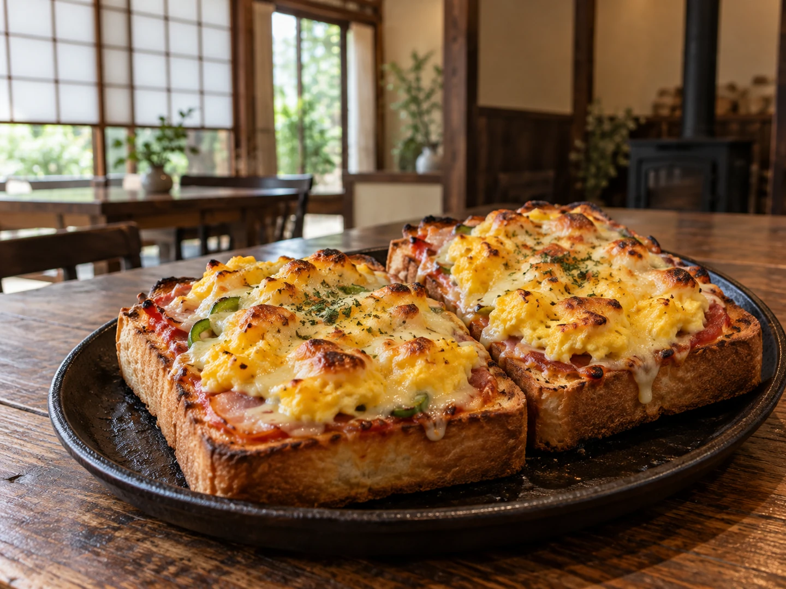

CONCEPT
駅のそばの古民家で、
ほっと一息
いこい珈琲は、名古屋市西区名駅にある、古民家を改装した喫茶店です。 お店は、ここを「木の温もりに包まれた、落ち着きある癒やしのカフェ」と紹介しています。
IKOI COFFEE
店名の「いこい」のとおり、ほっと一息つける場所。お店の案内には「『ほっと一息』が聞こえる」という言葉が添えられていました。
どこか懐かしく、心までほっとする時間を過ごしませんか？ 公式Instagram（2026年7月30日）より
読書や友人との語らい、ひとりでゆっくり過ごす時間にもぴったり、と案内されています。 忙しい毎日の中で、まったりできる古民家です。
